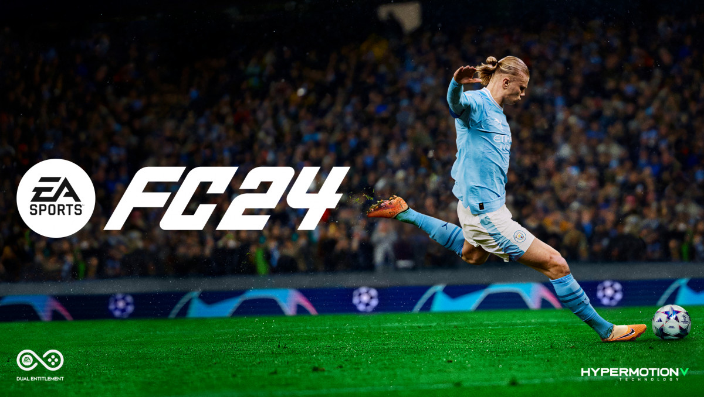

ФИФА
Фифа это моя любимая игра про спорт ИНТЕРЕСТНЫЙ ФАКТ 29 сентября 2023 года вышла EA Sports FC 24 — новая часть самого популярного футбольного симулятора. В этот раз серия сменила название: в нем больше нет слова FIFA. Дело в том, что компания EA разорвала сотрудничество с организацией ФИФА. Но в остальном игра осталась прежней. Рассказываем, что нового предлагает EA Sports FC 24 фанатам футбольных симуляторов. И стоят ли эти изменения покупки игры.
Музыка из фифа24
Офис разработчика
WПодробно о фифе24
EA Sports FC 24 — компьютерная игра в жанре спортивного симулятора. Первая игра в серии EA Sports FC после завершения договора между EA и Международной федерацией футбола FIFA, разработанная компанией EA Vancouver под издательством Electronic Arts. Релиз игры состоялся 29 сентября 2023 года на ПК, PlayStation 4, PlayStation 5, Xbox One, Xbox Series X/S и Nintendo Switch.
0 мая 2022 года EA Sports и FIFA анонсировали завершение долгосрочного сотрудничества между организациями, которое оканчивалось 31 декабря 2022 года плюс продление на один год для завершения и издательства последней игры серии, FIFA 23. EA сообщила, что игровая франшиза FIFA в 2023 году будет переименована в EA Sports FC. Несмотря на это, компания заявила, что предстоящая игра в обновлённой серии сохранит лицензию на использование имён более чем 19 тысяч футболистов, 700 команд, 100 стадионов и 30 футбольных лиг. Новыми лицензиями в игре стали Лига чемпионов УЕФА среди женщин, испанская Лига F и немецкая женская Бундеслига.
Анонсируемый трейлер был опубликован 10 июля 2023 года. Прямая трансляция презентации игры в амстердамском FC Clubhouse была опубликована вместе с первым трейлером игры 13 июля 2023 года.
В данной игре будет третья версия движка HyperMotion Volumetric, позволяющая машинным обучением записывать движения футболистов из реального матча в игру. Количество в игре достигнет 19 тысяч и выше движений футболистов. Помимо всего прочего, добавится технология моделей игроков EA Sports Sapien и игровые стили PlayStyles powered by Opta.